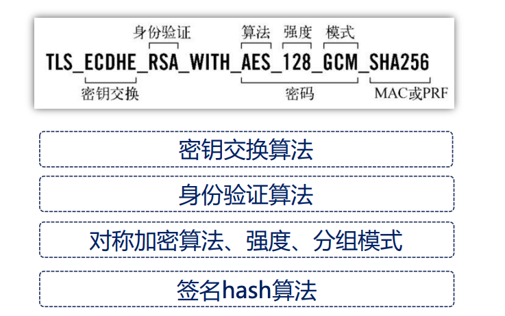
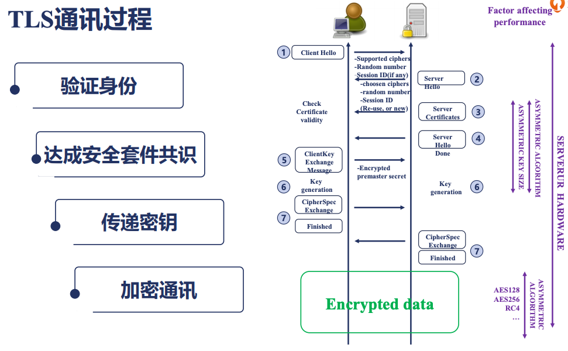

1. 初识nginx
1.1. 主要使用场景
静态资源服务
反向代理服务
api服务

1.2. nginx为何出现
互联网的跨苏普及
摩尔定律性能提升
低效的apache 一个连接对应一个进程
1.3. nginx的优点
高并发，高性能
可扩展性比较好
高可靠性
热部署
BSD许可证
1.4. nginx组成
nginx二进制可执行文件
nginx.conf配置文件
access.log 访问日志
error.log 错误日志
1.5. 常见nginx及其分支
1.5.1. 标准分支
开源nginx: nginx.org
商业版本： nginx.com
1.5.2. tengine
tengine是淘宝发起的web服务器项目
1.5.3. openrestry
张亦春维护的。
开源版本 openresty.org
商业版本 openresty.com
1.6. nginx配置语法
配置文件由指令与指令块构成
每个指令以分号结尾，指令和参数之间空格分隔。
指令块以{}大括号将多条指令组织在一起。
include 语句运行组合多个配置文件来提升可维护性。
使用#符号表示注释，提升可读性。
使用$符号使用变量。
部分指令是支持正则表达式的。
1.7. 配置样例

1.8. nginx 编译安装
wget https://nginx.org/download/nginx-1.20.2.tar.gz
tar xf nginx-1.20.2.tar.gz
cd nginx-1.20.2/
yum install gcc
./configure --prefix=/root/nginx
make && make install
cd /root/nginx
./sbin/nginx
ps axu |grep nginx
1.9. nginx命令行
1.9.1. 重载配置文件
vim conf/nginx.conf 修改端口，
./sbin/nginx -s reload
1.9.2. 热部署
热部署是保证在一个nginx状态下，完成不影响业务的前提下更新nginx从一个版本到另一个版本的过程。
# 备份下老版本的
mv sbin/nginx sbin/nginx.old
# 弄新版本nginx过来
cp /root/n2/sbin/nginx sbin/nginx
[root@zhaojiedi-elk-2 nginx]# ps aux |grep nginx |grep master
root 33924 0.0 0.0 20708 1380 ? Ss 15:52 0:00 nginx: master process ./sbin/nginx
# 发送热部署信号
kill -USR2 33924
# 检查查看有2个master进程和对应的work进程
[root@zhaojiedi-elk-2 nginx]# ps aux |grep nginx
root 33924 0.0 0.0 20708 1380 ? Ss 15:52 0:00 nginx: master process ./sbin/nginx
nobody 35468 0.0 0.0 33380 1484 ? S 15:55 0:00 nginx: worker process
root 40861 0.0 0.0 20576 1604 ? S 16:00 0:00 nginx: master process ./sbin/nginx
nobody 40862 0.0 0.0 33264 1620 ? S 16:00 0:00 nginx: worker process
root 41217 0.0 0.0 112812 976 pts/1 S+ 16:01 0:00 grep --color=auto nginx
# 通知老的进行关闭自己work进程
kill -WINCH 33924
# 确认老的work关闭
[root@zhaojiedi-elk-2 nginx]# ps aux |grep nginx
root 33924 0.0 0.0 20708 1380 ? Ss 15:52 0:00 nginx: master process ./sbin/nginx
root 40861 0.0 0.0 20576 1604 ? S 16:00 0:00 nginx: master process ./sbin/nginx
nobody 40862 0.0 0.0 33264 1620 ? S 16:00 0:00 nginx: worker process
root 41782 0.0 0.0 112812 972 pts/1 S+ 16:02 0:00 grep --color=auto nginx
# 这里可以在发送一个kill -9 信号关闭老的，或者留着， 然后发送reload进行重启。
1.9.3. 切割日志文件
mv access.log access.log.$(date "+%F")
./sbin/nginx -s reopen
1.10. SSL发展
发展过程
ssl3.0 => tls1.0 => tls1.1 => tls1.2 => tls1.3
密码套件
证书类型
域名验证 => 组织验证 => 扩展验证
1.11. SSL通信过程
1.12. 配置证书
一般情况下会通过nginx的include来包含各个域名的配置文件。
通过include sites/*.conf 这种片段来包含sites目录下各个配置文件， 具体配置文件里面是每个域名的配置。
# 老的配置
[root@zhaojiedi-elk-2 nginx]# cat sites/nx.linuxpanda.tech.conf
server{
listen 8083 ;
server_name nx.linuxpanda.tech;
alias /html/nx;
}
# 申请证书，一般是2个文件， crt 一个 key一个， 一个是公钥的一个是私钥的。
[root@zhaojiedi-elk-2 nginx]# cat sites/nx.linuxpanda.tech.conf
server{
listen 8083 ;
listen 8443 ssl;
server_name nx.linuxpanda.tech;
alias /html/nx;
ssl_certificate ssl/nx.linuxpanda.tech.crt;
ssl_certificate_key ssl/nx.linuxpanda.tech.key;
}
重载下nginx即可生效
Note
如果你要使用免费证书的话，这里建议大家选择国外的证书免费提供商，国内的太绕了，需要填写和登记的太多了。
1.13. openresty+lua样例
#添加如下片段
location /lua {
default_type text/html;
content_by_lua_block {
ngx.say("<p>hello, world</p>")
}
}
# 重载一下
[root@zhaojiedi-elk-2 openresty]# curl http://10.157.89.215:8084/lua
<p>hello, world</p>